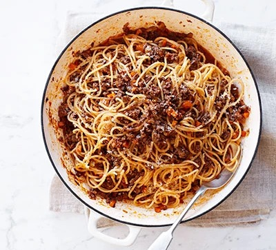

Ragu

What's it
A rich, versatile meat sauce: serve it Bolognese-style with spaghetti or use it as a base for lasagne or moussaka
Ingredients
- 1 tbsp olive oil
- 1 onion, halved and finely chopped
- 1 celery stick, finely diced
- 1 large carrot, finely diced
- 600g pack minced beef steak
- 3 tbsp tomato purée
- 2 garlic cloves, finely grated
- 2 tsp fresh thyme leaves
- 150ml red wine (or use extra beef stock)
- 500ml beef stock
- 400g spaghetti
- 50g grated parmesan, plus extra to serve (optional)
- side salad, to serve
Steps
- Heat the oil in a large pan and add the onion, celery and carrot. Fry over a medium heat for 10 mins, stirring now and then, until softened and starting to colour.
- Stir in the mince and cook, breaking up any clumps of meat with a wooden spoon, until browned.
- Add the tomato purée, garlic and thyme, and cook for 1-2 mins more. Pour in the wine, if using, and increase the heat to boil off most of the alcohol. Reduce the heat, stir in the stock and season. Cover with a tight-fitting lid and leave to cook gently for 1 hr-1 hr 15 mins until the meat is tender and the sauce has thickened.
- Remove the lid and continue cooking for 15 mins. Meanwhile, cook the pasta following pack instructions. Reserve a mugful of the cooking water, then drain the spaghetti and add to the ragu with the Parmesan. Toss well and add a little pasta water to help the sauce coat the spaghetti. Serve with a side salad and extra cheese, if you like.